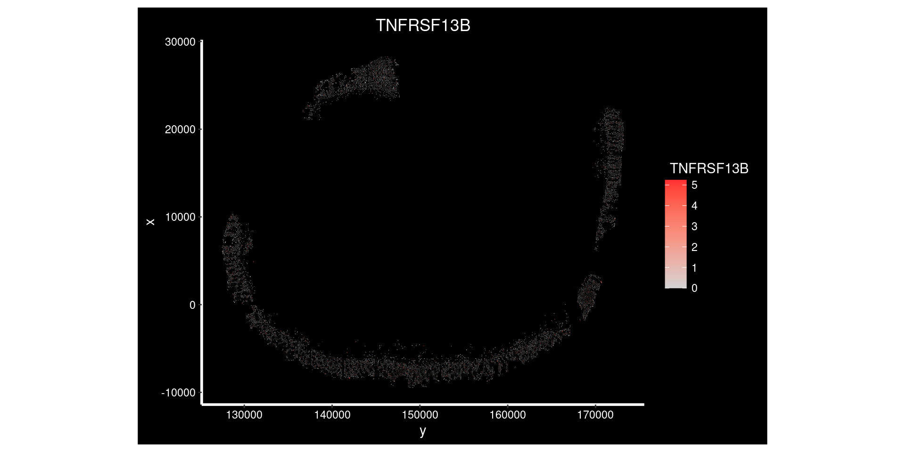

Differential expression between groups using pseudobulk
Sarah Williams
https://www.ncbi.nlm.nih.gov/pmc/articles/PMC6096346/
Overview
Once we have identified cell types present in the samples, its common to test how gene expression changes between experimental conditions, within each different cell type.
Some cell types may be dramatically affected by the experimental conditions, while others are not. Likewise some genes may change only in a specific cell type, whereas others show a more general difference.
This document describes how to apply a pseudobulk approach to test for differences between groups. In a pseudobulk approach counts are obtained by pooling together groups of cells; in this case cells from the of the same celltype from the same sample. These pooled counts can then be analysed more like a bulk RNAseq experiment.
This is very similar to how a non-spatial single cell experiment may be analysed.
Note that there are many other approaches to calculate differential expression in this kind of data - including those that make use of individual cells; see review (Soneson and Robinson 2018).
This test requires:
- Biological replicates for each group
- Assigned cell types
For example:
- What genes are differentially expressed in epithelial cells in Crohn’s disease vs healthy individuals?
- How do genes change with treatment in each different cell type in my sample?
Steps:
- Calculate pseudobulk
- Filter to testable pseudobulk groups (enough cells to pool)
- Filter to testable genes (enough expression to see changes)
- Test for changes in gene expression
- Plot DE results and individual genes.
Worked example
How does gene expression change within each cell type between Ulcerative colitis or Crohn’s disease, and Healthy controls?
Using data from Macrophage and neutrophil heterogeneity at single-cell spatial resolution in human inflammatory bowel disease from (Garrido-Trigo et al. 2023);
The study included 9 cosmx slides of colonic biopsies
- 3x HC - Healthy controls
- 3x UC - Ulcerative colitis
- 3x CD - Chrones’s disease
Load libraries and data
library(Seurat)
library(tidyverse)
library(limma)
library(DT)
library(edgeR)data_dir <- file.path("~/projects/spatialsnippets/datasets/GSE234713_IBDcosmx_GarridoTrigo2023/processed_data")
seurat_file_01_loaded <- file.path(data_dir, "GSE234713_CosMx_IBD_seurat_01_loaded.RDS")so <- readRDS(seurat_file_01_loaded)Experimental design
There are three individuals per condition, one tissue sample from each individual. 9 slides in total. Each ‘sample’ is listed below.
As a cosmx Each tissue sample has multiple FOVs captured.
NB: ‘FOV’ Feild Of View: In the seurat package, an number of functions include an ‘fov’ parameter. This corresponds to the slide on which one or more samples are present on. In the cosMX output an ‘fov’ refers to the rectangular regions on the slide that are measured; there are multiple fovs per slide. This document uses the latter.
sample_table <- select(as_tibble(so@meta.data), condition, individual_code, fov_name) %>%
unique() %>%
group_by(condition, individual_code) %>%
summarise(n_fovs= n(), item = str_c(fov_name, collapse = ", "))
DT::datatable(sample_table)Cell filtering and counting
We need to define the grouping that will make one pseudobulk sample for analysis. In this experiment, we can consider all cells within a tissue sample as somewhat equivalent. Therefore that is all cells of a particular celltype, within a tissue sample.
If we had a tiled fovs across a tissue sample with distinct regions (e.g. cancer, stroma) it would be necessary to group them by subregion as well.
Once the pseudobulk replicate grouping is decided, we need to check there will be enough cells to perform our analyses. Note there are several levels of filtering here!
- Need at least x reads in a cell to include it
- Need at least x cells of a celltype within an fov to include a sample
- Can only test where we have at least 2 samples on each side of a contrast.
- In some datasets, it may be worth removing entire samples that have too few fovs (e.g. tissue peeling off the slide). This isn’t done here, as there are plenty.
What these thresholds should be needs to be determined for each experiment.
Filter counts per cell
To start, check out the distribution of reads per cell. Here, we choose and apply a filter of 200 reads. This is low compared to what you might see in a single scRNAseq experiment, but we are working with only 1000 genes.
min_reads_per_cell <- 200
ggplot(so@meta.data, aes(x=nCount_RNA)) +
geom_density() +
geom_vline(xintercept = min_reads_per_cell, lty=3) +
scale_x_log10() +
theme_bw()+
ggtitle("How many reads per cell?")
| Version | Author | Date |
|---|---|---|
| 3e314f0 | swbioinf | 2025-08-07 |
so<- so[,so$nCount_RNA >= min_reads_per_cell]Filter cells per group
Next we pool each celltype within each sample (naming those groupings sample_cluster). But there needs to be a certain number of cells for that to work - less than a certain number of cells and a pool will be excluded. The table below shows the cells per grouping.
Note there are much fewer t-cells overall, but given that we have a high number of samples, there should still be enough to include. Its typical that some of the less common cell types are difficult or impossible to reliably test.
min_cells_per_samplecluster <- 100
so$sample_cluster <- paste0(so$tissue_sample,"_", so$celltype_subset)
celltype_summary_table <- so@meta.data %>%
group_by(condition, group, individual_code, celltype_subset, sample_cluster) %>%
summarise(cells=n(), .groups = 'drop')
DT::datatable(celltype_summary_table)ggplot(celltype_summary_table, aes(x=cells, col=celltype_subset)) +
geom_density() +
geom_vline(xintercept=min_cells_per_samplecluster, lty=3) +
geom_rug() +
scale_x_log10() +
theme_bw() +
ggtitle("How many cells per sample cluster?")
| Version | Author | Date |
|---|---|---|
| 3e314f0 | swbioinf | 2025-08-07 |
Record the names of those sample_clusters that contain enough cells to be used. Will use this later to filter.
celltype_summary_table.passed <- celltype_summary_table[celltype_summary_table$cells >= min_cells_per_samplecluster,]
passed_sample_clusters <- celltype_summary_table.passed$sample_clusterSamples per contrast.
How many bioloical samples are represented in our filtered table?
In this experiment, there are enough samples to run the contrasts for every cell type.
celltype_summary_table.passed %>% select(condition, individual_code, celltype_subset) %>%
unique() %>%
group_by(condition, celltype_subset) %>%
summarise(n=n()) %>%
pivot_wider( names_from=condition, values_from = n)# A tibble: 5 × 4
celltype_subset `Crohn's disease` `Ulcerative colitis` `Healthy controls`
<fct> <int> <int> <int>
1 epi 3 3 3
2 myeloids 3 3 3
3 plasmas 3 3 3
4 stroma 3 3 3
5 tcells 2 3 2NB: What if you do need to skip constrasts? Often its easiest to count your biological replicates at the differential expression step and skip them there. You might need to run contrasts between groups one at a time to do this.
Calculate pseudobulk
Now use the PseudobulkExpression() function to sum up each gene’s gene expression across each sample_cluster.
pseudobulk_counts <- PseudobulkExpression(so, assays = "RNA", layer="counts", method = 'aggregate', group.by = 'sample_cluster')
pseudobulk_counts_matrix <- pseudobulk_counts[["RNA"]]
# Change - back to _. Ideally we'd have neither, but - will cause problems later
colnames(pseudobulk_counts_matrix)<-gsub("-","_",colnames(pseudobulk_counts_matrix))Now instead of counts for each individual cell, we have our pseodubulk matrix with the pooled sum of counts for each celltype within each fov region. So the numbers are much higher, with fewer zeros. But note that each pool is a different size, so we can’t compare counts directly. We will address this later with normalisation.
pseudobulk_counts_matrix[1:10,1:4]10 x 4 sparse Matrix of class "dgCMatrix"
CD_a_epi CD_a_myeloids CD_a_plasmas CD_a_stroma
TGFB3 461 23 136 204
PIGR 7392 28 127 188
MALAT1 11323 556 1464 7047
MZT2A 29664 2285 9305 11766
IL16 442 66 263 284
XBP1 1179 42 392 252
S100A6 11282 146 291 1532
CCL2 300 29 84 266
CEACAM1 983 19 43 81
VSIR 539 71 115 263Next, filter to only those passed sample_clusters we saw earlier - this filtered table is what we’ll use for calculating differential expression.
We also need an annotation table to tell us what is in each sample_cluster (sample, celltype, condition…). Build this by filtering the celltype summary table made earlier.
For convenience we filter it to the same samples, in the same order as the pseudobulk matrix, so we can then use those columns of data to build our differential expression model in the next step. We need to be careful the order remains the same.
# Filter the pseudobulk table
pseudobulk_counts_matrix <- pseudobulk_counts_matrix[,passed_sample_clusters]
# And filter the celltype summary into an annotation table for only those sample_clusters
# pull in relevant annotation in a matched order
pseudobulk_anno_table <- celltype_summary_table
match_order <- match(passed_sample_clusters, pseudobulk_anno_table$sample_cluster)
pseudobulk_anno_table <- pseudobulk_anno_table[match_order,]
# Double check that the order of samples in the annotation table matches the pseudobulk table.
# If this is wrong then the results will be nonsense!
stopifnot(all(colnames(pseudobulk_counts_matrix) == pseudobulk_anno_table$sample_cluster ))Calculate Differential Expression
We now have a counts matrix, and an annotation table that describes its samples.
This looks very much like a bulk RNAseq experiment. Except - instead of X samples across Y conditions, we have X samples of Y conditions for each of Z celltypes.
pseudobulk_counts_matrix[1:10,1:4]10 x 4 sparse Matrix of class "dgCMatrix"
CD_a_epi CD_a_myeloids CD_a_plasmas CD_a_stroma
TGFB3 461 23 136 204
PIGR 7392 28 127 188
MALAT1 11323 556 1464 7047
MZT2A 29664 2285 9305 11766
IL16 442 66 263 284
XBP1 1179 42 392 252
S100A6 11282 146 291 1532
CCL2 300 29 84 266
CEACAM1 983 19 43 81
VSIR 539 71 115 263head(pseudobulk_anno_table)# A tibble: 6 × 6
condition group individual_code celltype_subset sample_cluster cells
<fct> <fct> <chr> <fct> <chr> <int>
1 Crohn's disease CD CD_a epi CD_a_epi 2223
2 Crohn's disease CD CD_a myeloids CD_a_myeloids 163
3 Crohn's disease CD CD_a plasmas CD_a_plasmas 620
4 Crohn's disease CD CD_a stroma CD_a_stroma 955
5 Crohn's disease CD CD_b epi CD_b_epi 2592
6 Crohn's disease CD CD_b myeloids CD_b_myeloids 16706We will use a fairly standard limma differential expression analysis.
We will process each celltype one at a time as follows:
- Subset the counts matrix and annotation table to the celltype.
- Build and fit the model. In our case, a simple one that looks for various by disease group, blocked on individual.
- Run the test.
How to build the model and run the test will need to be customised for your experimental design. Online resources that describe approaches for bulk RNAseq analyses can be applied to pseudobulk analyses - see the ‘More Information’ section of this document for suggestions.
In this case the line model.matrix( ~0 + group) builds a
model where gene expression is expected to vary by group (UC/CD/HC). The
~0 part indicates a ‘intercept’, which is convenient because it means we
can include all 3 groups in our contrasts, rather than one of them being
treated as the baseline. ( NB: Mathematically, you could use ~group
alone without intercept, and define contrasts accordingly to get the
same result. )
Some example models:
- ~0 + group : One pseudoreplicate per individual.
- ~0 + group + individual : If this was a treatment / time point experiment with paired samples from individuals. But only one pseodureplicate per individual.
- ~0 + group + celltype (with or without blocking + duplicate correlation) : Instead of subsetting to celltype, includes cell type in the model. This pulls more data into the stataticacs, but makes building the contrasts challenging! Not covered here.
# Empty list to collect results
de_result_list <- list()
# celltype_subset is a matrix
for (the_celltype in levels(so$celltype_subset)) {
# Subset counts andn annotation to one cell type.
# Ensure order remains identical!
print(the_celltype)
anno_table.this <- pseudobulk_anno_table[pseudobulk_anno_table$celltype_subset == the_celltype,]
count_matrix.this <- pseudobulk_counts_matrix[,anno_table.this$sample_cluster]
## Check for sufficient replicates ##
# To do any calculations, we need at least 2 pseudobulk groups per contrast.
# there are plenty in this experiemnt, but with less replicates and rare cell types
# it may be neccesary to check and skip certain contrasts. Here woudl be a good
# if (not enouch samples to run test ) {next}
# skip clusters with no samples after filtering
if( nrow(anno_table.this) < 1 ) {next}
# Setup objects for limma
dge <- DGEList(count_matrix.this)
dge <- calcNormFactors(dge)
# Build model
group <- anno_table.this$group
individual_code <- anno_table.this$individual_code
# Model design
design <- model.matrix( ~0 + group)
# Run Voom
vm <- voom(dge, design = design, plot = FALSE)
# Define and fit contrasts and run ebayes
fit <- lmFit(vm, design)
contrasts <- makeContrasts(UCvHC = groupUC - groupHC,
CDvHC = groupCD - groupHC,
levels=coef(fit))
fit <- contrasts.fit(fit, contrasts)
fit <- eBayes(fit)
## Look through each contrast, and extract a results table.
for ( the_coef in colnames(contrasts) ) {
de_result.this <- topTable(fit, n = Inf, adjust.method = "BH", coef = the_coef) %>%
rownames_to_column("target") %>%
mutate(contrast=the_coef,
celltype=the_celltype) %>%
select(celltype,contrast,target,everything()) %>%
arrange(P.Value)
de_result_list[[paste(the_celltype, the_coef, sep="_")]] <- de_result.this
}
}[1] "epi"
[1] "myeloids"
[1] "plasmas"
[1] "stroma"
[1] "tcells"# Join together results for all celltypes, and pull out those with a singificant adjusted p-value
de_results_all <- bind_rows(de_result_list)
de_results_sig <- filter(de_results_all, adj.P.Val < 0.05)Table of significant results.
DT::datatable(mutate(de_results_sig, across(is.numeric, signif, digits = 3)))DE plots
The below plots show the logFC calculate for each gene versus its average expression across all samples. This is a useful diagnostic plot to evaluate your differential expression results.
- Only big changes are significant at lower expressions, simply becuase higher expression means more statistical confidence.
- A lopsided plot might indicate some oddness around the normalisation of your data (e.g. extremely different cell counts).
library(ggrepel) # gg_repel, For non-overlapping gene labels
make_ma_style_plot <- function(res_table, pval_threshold = 0.01, n_genes_to_label = 10) {
p <- ggplot(res_table, aes(x=AveExpr, y=logFC, col=adj.P.Val < pval_threshold) ) +
geom_hline(yintercept = c(0), col='grey80') +
geom_point(pch=3) +
geom_text_repel(data = head(arrange(filter(res_table , adj.P.Val < pval_threshold ), P.Value), n=5),
mapping = aes(label=target), col="red" ) +
theme_bw() +
geom_hline(yintercept = c(-1,1), lty=3) +
scale_colour_manual(values = c('FALSE'="black", 'TRUE'="red")) +
theme(legend.position = 'none')
return(p)
}#res_table.UCvHC.epi <- filter(de_results_all, contrast == "UCvHC", celltype=="epi")
p1 <- make_ma_style_plot(res_table = filter(de_results_all, contrast == "UCvHC", celltype=="epi")) + ggtitle("UC vs HC - epi")
p2 <- make_ma_style_plot(res_table = filter(de_results_all, contrast == "UCvHC", celltype=="tcells"))+ ggtitle("UC vs HC - T-cells")
p3 <- make_ma_style_plot(res_table = filter(de_results_all, contrast == "UCvHC", celltype=="stroma")) + ggtitle("UC vs HC - stroma")
p1 + p2 + p3
| Version | Author | Date |
|---|---|---|
| 3e314f0 | swbioinf | 2025-08-07 |
Check some examples
Its always worth visualising how the expression of your differentially expressed genes really looks, with respect to your experimental design. How best to do this depends on your experiment.
The results suggests that TNFRSF13B was significantly DE between individuals with Ulcerative Colitis and Healthy Controls in plasma cells. As a first step, there’s some very convenient seurat plots below;
p1 <- VlnPlot(subset(so, celltype_subset == "plasmas"), features = "TNFRSF13B", group.by = 'group', alpha = 0.1)
p2 <- FeaturePlot(so, "TNFRSF13B", split.by = "group")
p1 / p2
| Version | Author | Date |
|---|---|---|
| 3e314f0 | swbioinf | 2025-08-07 |
We might also want to seewhat that expression looks like spatially, on some representative groups. Though the changes aren’t obvious at this broad level.
so.sample1 <- so[,so$tissue_sample=='HC_a']
so.sample2 <- so[,so$tissue_sample=='UC_c']
p1 <- ImageFeaturePlot(so.sample1,
fov = 'GSM7473682_HC_a', # see names(so@images)
feature = 'TNFRSF13B',
axes = TRUE,
border.color = "black", border.size = 0.1,
boundaries = "segmentation",
crop=TRUE,
nmols = 10000)
p2 <- ImageFeaturePlot(so.sample2,
fov = 'GSM7473687_UC_c', # 'GSM7473686_UC_b', # see names(so@images)
feature = 'TNFRSF13B',
axes = TRUE,
border.color = "black", border.size = 0.1,
boundaries = "segmentation",
crop=TRUE,
nmols = 10000)
plot(p1)
| Version | Author | Date |
|---|---|---|
| 3e314f0 | swbioinf | 2025-08-07 |
plot(p2)But it gets difficult to summarise see the changes in either of those.
We can also use the the normalised pseudobulk expression to see how gene expression varies within each fov,individual,celltype and condition - The plot below shows an overview of normalised TNFRSF18 expression across the entire experiment.
# Get tmm normalised coutns for all pseudobulk
# WHen we did the DE we calculated this a celltype at a time, so values might differ slightly!
dge <- DGEList(pseudobulk_counts_matrix)
dge <- calcNormFactors(dge)
norm_pseudobulk <- cpm(dge , log=TRUE) # uses tmm normalisation
# Plot expression for TNFRSF13B
plottable <- cbind(pseudobulk_anno_table, expression = norm_pseudobulk["TNFRSF13B",])
ggplot(plottable, aes(x=condition, y=expression, col=condition )) +
geom_boxplot(outlier.shape = NA) +
geom_point() +
theme_bw() +
theme(axis.text.x=element_text(angle = -90, hjust = 0)) +
facet_wrap(~celltype_subset) 
| Version | Author | Date |
|---|---|---|
| 3e314f0 | swbioinf | 2025-08-07 |
Contrast with PIGR, which was flagged at differentially expressed across multiple cell types. (Though, being a largely epithelial gene, is highest in the epithelia.)
plottable <- cbind(pseudobulk_anno_table, expression = norm_pseudobulk["PIGR",])
ggplot(plottable, aes(x=condition, y=expression, col=condition )) +
geom_boxplot(outlier.shape = NA) +
geom_point() +
theme_bw() +
theme(axis.text.x=element_text(angle = -90, hjust = 0)) +
facet_wrap(~celltype_subset) 
Code Snippet
Metadata coloumns used:
- nCount_RNA : Counts per cell
- sample : The unique identifier of each tissue sample
- cluster : The column containing the clusters to test condition within. Test repeated for element within column. May be cluster, cellype, niche or other cell-grouping of interest.
- group : Column containing experimental groups (e.g. condition, treatment group)
### REQUIRES TESTING ####
library(Seurat)
library(edgeR)
library(limma)
library(tidyverse)
# Set threhoehsolds
min_reads_per_cell <- 200
min_cells_per_samplecluster <- 100
# Remove cells with too few counts
so <- so[,so$nCount_RNA >= min_reads_per_cell]
# Define pseodoreplicate groups, with all relevant sample annotation
# remove those with too few cells.
so$sample_cluster <- paste0(so$sample,"_", so$cluster)
celltype_summary_table <- so@meta.data %>%
group_by(sample_cluster, group, individual, cluster) %>%
summarise(cells=n(), .groups = 'drop')
## Calculate pseudobulk
pseudobulk_counts <- PseudobulkExpression(so, assays = "RNA", layer="counts", method = 'aggregate', group.by = 'sample_cluster')
pseudobulk_counts_matrix <- pseudobulk_counts[["RNA"]]
# Change - back to _. Ideally have neither and skip this step
colnames(pseudobulk_counts_matrix)<-gsub("-","_",colnames(pseudobulk_counts_matrix))
# Determine sample_clusters with enough cells
# Filter both pseudobulk matrix and pseudobulk annotation
passed_sample_clusters <- celltype_summary_table$sample_cluster[celltype_summary_table$cells >= min_cells_per_samplecluster]
pseudobulk_counts_matrix <- pseudobulk_counts_matrix[,passed_sample_clusters]
# Create pseubulk anno table from passed clusters, matching order
match_order <- match(passed_sample_clusters, celltype_summary_table$sample_cluster)
pseudobulk_anno_table <- celltype_summary_table[match_order,]
# Calculate DE across every celltype
# Empty list to collect results
de_result_list <- list()
for (the_celltype in unique(so$cluster)) {
# Subset counts andn annotation to one cell type.
# Ensure order remains identical!
print(the_celltype)
anno_table.this <- pseudobulk_anno_table[pseudobulk_anno_table$cluster == the_celltype,]
count_matrix.this <- pseudobulk_counts_matrix[,anno_table.this$sample_cluster]
## Check for sufficient replicates ##
# To do any calculations, we need at least 2 pseudobulk groups per contrast.
# there are plenty in this experiemnt, but with less replicates and rare cell types
# it may be neccesary to check and skip certain contrasts. Here woudl be a good
# if (not enouch samples to run test ) {next}
# skip clusters with no samples after filtering
if( nrow(anno_table.this) < 1 ) {next}
# Setup objects for limma
dge <- DGEList(count_matrix.this)
dge <- calcNormFactors(dge)
# Build model
group <- anno_table.this$group
# Model design
design <- model.matrix( ~0 + group)
# Run Voom
vm <- voom(dge, design = design, plot = FALSE)
# Define and fit contrasts and run ebayes
fit <- lmFit(vm, design)
contrasts <- makeContrasts(AvsControl = groupGroupA - groupControl,
#BvsControl = groupGroupB - groupControl,
# ...
levels=coef(fit))
fit <- contrasts.fit(fit, contrasts)
fit <- eBayes(fit)
## Look through each contrast, and extract a results table.
for ( the_coef in colnames(contrasts) ) {
de_result.this <- topTable(fit, n = Inf, adjust.method = "BH", coef = the_coef) %>%
rownames_to_column("target") %>%
mutate(contrast=the_coef,
celltype=the_celltype) %>%
select(celltype,contrast,target,everything()) %>%
arrange(P.Value)
de_result_list[[paste(the_celltype, the_coef, sep="_")]] <- de_result.this
}
}
# Join together results for all celltypes, and pull out those with a singificant adjusted p-value
de_results_all <- bind_rows(de_result_list)
de_results_sig <- filter(de_results_all, adj.P.Val < 0.05)Results
DT::datatable(mutate(head(de_results_sig), across(is.numeric, signif, digits = 3)))This table is the typical output of limma tests; With a couple of extra columns added by our code.
- celltype: The celltype being tested (Added by example code)
- contrast: The contrast being tested (Added by example code)
- target : The gene name (Added by example code, is the rowname in limma output)
- rownames : The tested cell types
- logFC : Log 2 fold change between tested groups.
For a test of Test-Con;
- At logFC +1, A is doubled B.
- At logFC -1, A is half of B.
- A logFC 0 indicates no change.
- AveExpr : Average expression of a gene across all replicates.
- t : Moderated T-statistic. See Limma documentation.
- P.Value : P.value
- adj.P.Val : A multiple-hypothesis corrected p-value
- B : B statistic (rarely used). See Limma documentation.
More Information
- ‘Ochestrating single cell analysis with bioconductor’ book chapter ‘DE analyses between conditions’ : An explanation of the ‘pseudobulk’ approch to single cell differential expression calculation.
- Pseudobulk and differential expression (glmGamPoi documentation): Part of the documentation for the glmGamPoi R package (not used here), that features another clear explanation of pseudobulking.
- Bias, robustness and scalability in single-cell differential expression analysis (Soneson and Robinson 2018) : A review of single cell differential expression calculation methods.
- Seurat Differntial expression Vignette : How to run differential expression analyses using Seurat.
- limma documentation (Ritchie et al. 2015): The complete manual to limma.
- Differential Expression with Limma-Voom UC davis bioinformatics training : A more accessible explanation of bulk RNAseq analyses using limma.
- Interactions and contrasts : An excellent visual explanation of how to build linear models for more complex multi-factor experimental designs (e.g. treatment and genotype). Part of a larger Data Analysis for Genomics class resource.
References
sessionInfo()R version 4.4.0 (2024-04-24)
Platform: x86_64-pc-linux-gnu
Running under: Ubuntu 22.04.5 LTS
Matrix products: default
BLAS: /usr/lib/x86_64-linux-gnu/openblas-pthread/libblas.so.3
LAPACK: /usr/lib/x86_64-linux-gnu/openblas-pthread/libopenblasp-r0.3.20.so; LAPACK version 3.10.0
locale:
[1] LC_CTYPE=en_AU.UTF-8 LC_NUMERIC=C
[3] LC_TIME=en_AU.UTF-8 LC_COLLATE=en_AU.UTF-8
[5] LC_MONETARY=en_AU.UTF-8 LC_MESSAGES=en_AU.UTF-8
[7] LC_PAPER=en_AU.UTF-8 LC_NAME=C
[9] LC_ADDRESS=C LC_TELEPHONE=C
[11] LC_MEASUREMENT=en_AU.UTF-8 LC_IDENTIFICATION=C
time zone: Etc/UTC
tzcode source: system (glibc)
attached base packages:
[1] stats graphics grDevices datasets utils methods base
other attached packages:
[1] ggrepel_0.9.6 edgeR_4.4.2 DT_0.33 limma_3.62.2
[5] lubridate_1.9.4 forcats_1.0.0 stringr_1.5.1 dplyr_1.1.4
[9] purrr_1.0.2 readr_2.1.5 tidyr_1.3.1 tibble_3.2.1
[13] ggplot2_3.5.1 tidyverse_2.0.0 Seurat_5.2.1 SeuratObject_5.0.2
[17] sp_2.2-0 workflowr_1.7.1
loaded via a namespace (and not attached):
[1] RColorBrewer_1.1-3 rstudioapi_0.17.1 jsonlite_1.8.9
[4] magrittr_2.0.3 ggbeeswarm_0.7.2 spatstat.utils_3.1-2
[7] farver_2.1.2 rmarkdown_2.29 fs_1.6.5
[10] vctrs_0.6.5 ROCR_1.0-11 spatstat.explore_3.3-4
[13] htmltools_0.5.8.1 sass_0.4.9 sctransform_0.4.1
[16] parallelly_1.42.0 KernSmooth_2.23-26 bslib_0.9.0
[19] htmlwidgets_1.6.4 ica_1.0-3 plyr_1.8.9
[22] plotly_4.10.4 zoo_1.8-12 cachem_1.1.0
[25] whisker_0.4.1 igraph_2.1.4 mime_0.12
[28] lifecycle_1.0.4 pkgconfig_2.0.3 Matrix_1.7-1
[31] R6_2.5.1 fastmap_1.2.0 fitdistrplus_1.2-2
[34] future_1.34.0 shiny_1.10.0 digest_0.6.37
[37] colorspace_2.1-1 patchwork_1.3.0 ps_1.8.1
[40] rprojroot_2.0.4 tensor_1.5 RSpectra_0.16-2
[43] irlba_2.3.5.1 crosstalk_1.2.1 labeling_0.4.3
[46] progressr_0.15.1 timechange_0.3.0 spatstat.sparse_3.1-0
[49] httr_1.4.7 polyclip_1.10-7 abind_1.4-8
[52] compiler_4.4.0 withr_3.0.2 fastDummies_1.7.5
[55] MASS_7.3-64 tools_4.4.0 vipor_0.4.7
[58] lmtest_0.9-40 beeswarm_0.4.0 httpuv_1.6.15
[61] future.apply_1.11.3 goftest_1.2-3 glue_1.8.0
[64] callr_3.7.6 nlme_3.1-166 promises_1.3.2
[67] grid_4.4.0 Rtsne_0.17 getPass_0.2-4
[70] cluster_2.1.8 reshape2_1.4.4 generics_0.1.3
[73] gtable_0.3.6 spatstat.data_3.1-4 tzdb_0.4.0
[76] hms_1.1.3 data.table_1.16.4 utf8_1.2.4
[79] spatstat.geom_3.3-5 RcppAnnoy_0.0.22 RANN_2.6.2
[82] pillar_1.10.1 spam_2.11-1 RcppHNSW_0.6.0
[85] later_1.4.1 splines_4.4.0 lattice_0.22-6
[88] renv_1.0.5 survival_3.8-3 deldir_2.0-4
[91] tidyselect_1.2.1 locfit_1.5-9.11 miniUI_0.1.1.1
[94] pbapply_1.7-2 knitr_1.49 git2r_0.33.0
[97] gridExtra_2.3 scattermore_1.2 xfun_0.50
[100] statmod_1.5.0 matrixStats_1.5.0 stringi_1.8.4
[103] lazyeval_0.2.2 yaml_2.3.10 evaluate_1.0.3
[106] codetools_0.2-20 BiocManager_1.30.25 cli_3.6.3
[109] uwot_0.2.2 xtable_1.8-4 reticulate_1.40.0
[112] munsell_0.5.1 processx_3.8.5 jquerylib_0.1.4
[115] Rcpp_1.0.14 globals_0.16.3 spatstat.random_3.3-2
[118] png_0.1-8 ggrastr_1.0.2 spatstat.univar_3.1-1
[121] parallel_4.4.0 dotCall64_1.2 listenv_0.9.1
[124] viridisLite_0.4.2 scales_1.3.0 ggridges_0.5.6
[127] rlang_1.1.5 cowplot_1.1.3